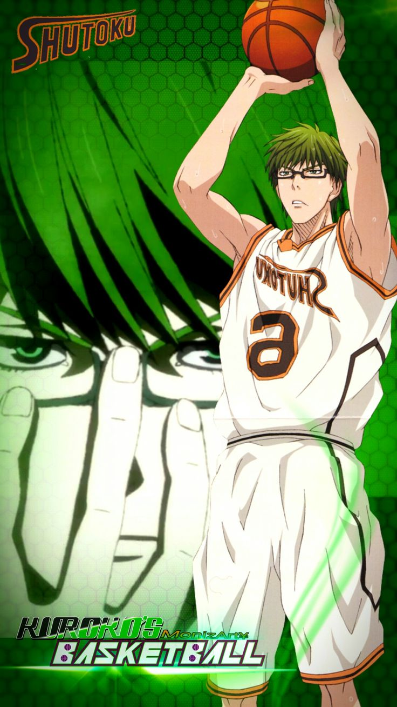
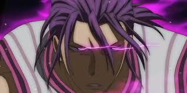
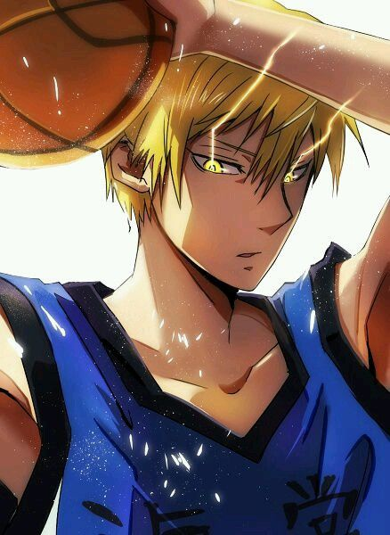
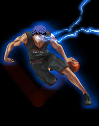
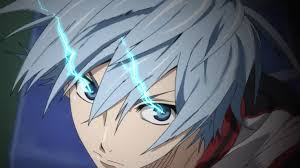
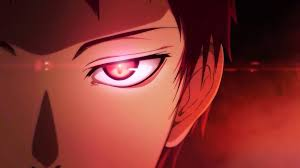

La Génération des Miracles ou Génération Miracle (キセキの世代, Kiseki no Sedai) est un groupe de 5 joueurs venant tous du Collège Teikō, chacun avec un talent exceptionnel. Ces joueurs sont si forts qu'on dit qu'il n'y en aurait qu'un seul qui puisse apparaître une fois tous les 10 ans.
Les joueurs et leurs attribut :

Shintarō Midorima (緑間 真太郎 Midorima Shintarō) était le vice-capitaine et l'arrière (SG) de la Génération des Miracles. Il joue maintenant au Lycée Shūtoku l'un des Trois Rois de Tokyo. Il est connu pour ne jamais rater un 3 points.

Atsushi Murasakibara (紫原 敦, Murasakibara Atsushi) est le pivot de la Génération des Miracles et jouait au collège Teikō. Il évolue actuellement au lycée Yōsen. Il est capable de dunker ou defendre sur n'importe qui.

Ryōta Kise (黄瀬 涼太, Kise Ryōta) est l'un des membres de la Génération des Miracles et jouait au collège Teikō. Il joue maintenant pour le Lycée Kaijō. Il est connu pour sa technique de copie, il peut copier n'importe quelle technique qu'il a déjà vue une fois.

Daiki Aomine (青峰 大輝, Aomine Daiki) était l'as de la Génération des Miracles et la lumière de Kuroko à Teikō. Il joue maintenant pour l'Académie Tōō. Sa capacité a dribbler le definit et le place tres largement dans la generation miracle.

Tetsuya Kuroko (黒子 テツヤ, Kuroko Tetsuya) est le protagoniste principal de la série Kuroko no Basuke. Il était le joueur fantôme de l'équipe de Teikō et de la génération miracle. C'est un spécialiste des passes maîtrisant la technique du misdirection. Il a rejoint l'équipe de basket du lycée Seirin avec pour but de faire de l'équipe et de Kagami les meilleurs du Japon.

Seijūrō Akashi (赤司 征十郎, Akashi Seijūrō) était le meneur et le capitaine de la Génération des Miracles au sein du collège Teikō. Maintenant, il est le capitaine de l'équipe du Lycée Rakuzan ainsi que celle de Vorpal Swords. Il est le meilleur joueur de la generation miracle. Et de loin, tres loin.